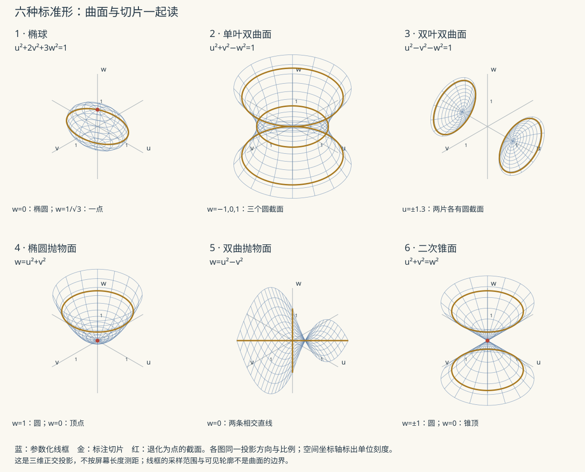

本页目录
解几 II · 二次曲面
二次方程在三维空间画出的全部图形，归结为六个标准脸谱 + 若干退化情形。认脸的方法是截痕法（用坐标平面去切，看截口曲线），分类的理论则是高代 VI 二次型标准形的几何兑现——两页知识在此互为表里。
学习层：符号、平移、主轴与截面各回答不同问题
1. 一个具体的椭球与截面
先看已经在主轴坐标中的曲面
它的二次矩阵特征值符号是 \(+,+,+\)，所以在右端为正且无退化的条件下是有界椭球。若加入中心 \(\mathbf c=(1,-1/2,1/3)\)，方程写成
展开会出现一次项，配方只是把中心移回 \(\mathbf c\)，不会改变特征值符号。再绕 \(z\) 轴旋转主轴，截面会在屏幕上转动，但主轴方向仍由特征向量给出。
在 \(z=s\) 的实际截面中，方程变为
因此 \(|s|<1/\sqrt3\) 时是椭圆，等号时退化为一点，超出时没有截点；这一张二维图只回答该平面里的问题。
2. 先预测：全局类型还是一张截面？
打开实验台前，先写下三个预测：
- 三个正特征值、右端为正的中心二次曲面，整体是有界还是会沿某个方向无限延伸？
- 平移配方会不会改变二次矩阵的特征值符号；旋转主轴会不会改变曲面本身？
- 对上式取 \(z=0,z=1/\sqrt3,z=1\)，三张截面分别是椭圆、点、空集吗？仅凭一张 \(2\)D 截图能否证明整个三维分类？
提交预测后，实验台才揭示特征值符号、中心与旋转后的主轴，以及指定平面的截面 SVG 和方程表。它会把“全局分类账”和“当前截面账”分开显示。
3. 正式桥：先配方，再旋转，最后切片
一般二次曲面写作
在非退化可中心化情形，解 \(A\mathbf c=-\mathbf b\) 后有
再取 \(A=Q\Lambda Q^\mathsf{T}\)，令 \(\mathbf x-\mathbf c=Q\mathbf y\)，就得到主轴方程 \(\sum_i\lambda_i y_i^2=\rho\)。特征值符号告诉我们正、负、零方向的供给；\(\rho\)、秩、一次项和切片位置共同决定实际是哪一种标准脸谱或退化情形。
JavaScript 失效时的静态 fallback：对 \(x^2+2y^2+3z^2=1\) 取水平截面，记 \(r(s)=1-3s^2\)。
| 截面 \(z=s\) | \(r(s)\) | 截面方程 | 实际截面 | 读取边界 |
|---|---|---|---|---|
| \(0\) | \(1\) | \(x^2+2y^2=1\) | 椭圆 | 只描述 \(z=0\) 这一片 |
| \(1/\sqrt3\) | \(0\) | \(x^2+2y^2=0\) | 一点 | 是退化截面，不是整面 |
| \(1\) | \(-2\) | \(x^2+2y^2=-2\) | 空集 | 不代表三维曲面为空 |
平移 \(\mathbf c\) 会把截面中心移到 \(\mathbf c\) 的投影；绕主轴的旋转会把椭圆的长短轴转向。若出现零特征值或不能解出有限中心，就必须改用抛物面、柱面或更一般的退化分析，不能继续套用椭球表。
4. 定理级结论与失败边界
- 定理级：实对称二次矩阵可正交对角化；在配方和主轴变换条件满足时，特征值符号、右端常数与秩共同给出曲面的全局分类。
- 层次边界：平移负责消一次项，旋转负责消交叉项并暴露主轴；两者都不是“看见一张截面图”本身。实际截面还要代入切平面方程并检查右端符号。
- 二维证据边界：一个或几个 \(2\)D 截面不能证明三维曲面的全局连通性、是否有第二片或是否沿某轴延伸；实验图是局部证据，不是分类定理。
- 退化边界：零特征值、零右端、奇异中心方程和退化截面需要单独处理。忽略一次项、切片位置或零方向，会把抛物面/柱面误认成椭球或双曲面。
1. 生成曲面：柱、锥、旋转面
- 柱面：方程缺某变量即是沿该轴的柱面（\(x^2 + y^2 = 1\) 在空间中是圆柱——"缺谁沿谁平移"）；
- 锥面：齐次方程（各项同次）过原点成锥（\(x^2 + y^2 = z^2\) 圆锥）；
- 旋转面：平面曲线 \(f(y, z) = 0\) 绕 \(z\) 轴旋转：把 \(y\) 换成 \(\pm\sqrt{x^2 + y^2}\)（"被转的变量换成到轴的距离"）。例：\(z = y^2\) 绕 \(z\) 轴 → 旋转抛物面 \(z = x^2 + y^2\)（卫星天线）。
2. 六大标准二次曲面（认脸表）

| 曲面 | 标准方程 | 截痕特征 | 记忆锚点 |
|---|---|---|---|
| 椭球面 | \(\frac{x^2}{a^2} + \frac{y^2}{b^2} + \frac{z^2}{c^2} = 1\) | 三向截口全椭圆 | 压扁的球 |
| 单叶双曲面 | \(\frac{x^2}{a^2} + \frac{y^2}{b^2} - \frac{z^2}{c^2} = 1\) | 水平椭圆、竖直双曲线 | 电厂冷却塔（一个负号） |
| 双叶双曲面 | \(\frac{x^2}{a^2} - \frac{y^2}{b^2} - \frac{z^2}{c^2} = 1\) | 分成两片 | 两只碗背对背（两个负号） |
| 椭圆抛物面 | \(z = \frac{x^2}{a^2} + \frac{y^2}{b^2}\) | 水平椭圆、竖直抛物线 | 碗（同号） |
| 双曲抛物面 | \(z = \frac{x^2}{a^2} - \frac{y^2}{b^2}\) | 水平双曲线、竖直两向反弯 | 马鞍/薯片（异号） |
| 二次锥面 | \(\frac{x^2}{a^2} + \frac{y^2}{b^2} = \frac{z^2}{c^2}\) | 水平椭圆缩到点再张开 | 双叶双曲面的渐近锥 |
认脸口诀：平方项符号数——三正是椭球，一负单叶、两负双叶；有一次项（\(z\)）是抛物面类，同号碗、异号鞍。
两个隽永的注脚：单叶双曲面与马鞍面是直纹面（曲面上铺满整条直线——弯曲外表全由直钢梁焊成，冷却塔与网壳结构的工程秘密）；马鞍点（高数极值判别里 Hessian 不定的那个名字）的原型就是双曲抛物面的原点——优化 II"鞍点"一词的几何老家。
3. 与高代二次型对表（分类的理论真相）
一般二次曲面 \(\mathbf{x}^\top A\mathbf{x} + 2\mathbf{b}^\top\mathbf{x} + c = 0\)（\(A\) 对称）。主轴定理（高代 VI）：正交变换 \(\mathbf x = Q\mathbf y\) 对角化 \(A\)，消去交叉项；再平移消一次项——化到标准形。于是：
惯性指数是分类的第一张证书，不是整份判决书：满秩时，三同号对应椭球型，两正一负或一正两负对应双曲型；若 \(A\) 有零特征值，则可能出现抛物面、柱面，也可能退化为点、直线、平面、直线对或空集，还要结合一次项、常数项与增广秩继续判断。正交变换 = 旋转保持形状与度量——"用哪个坐标系看"不改变曲面是什么，这正是"不变量分类"思想的几何实战，也是 PCA"转到主轴看数据"的同款思路（高代 VI §5 呼应）。
4. 典型例题
例 1（截痕认脸） \(\frac{x^2}{4} + y^2 - \frac{z^2}{9} = 1\)：\(z = z_0\) 截口椭圆恒存在（右端 \(1 + \frac{z_0^2}{9} > 0\)）——单叶双曲面（连成一体）；对照 \(\frac{x^2}{4} - y^2 - \frac{z^2}{9} = 1\)：\(x = x_0\) 需 \(|x_0| \geq 2\) 才有截口——双叶（中间断开）。
例 2（旋转面生成） 双曲线 \(\frac{x^2}{a^2} - \frac{z^2}{c^2} = 1\)（\(xz\) 平面内）绕 \(z\) 轴：\(x \to \pm\sqrt{x^2+y^2}\) 得 \(\frac{x^2 + y^2}{a^2} - \frac{z^2}{c^2} = 1\)——单叶双曲面原来是双曲线转出来的（绕另一轴则得双叶：同一条双曲线，绕不同轴，单双叶各一，一题记两脸）。
例 3（主轴化标准形） \(x^2 + y^2 + z^2 + 2xy = 1\)：矩阵 \(A\) 特征值 \(2, 0, 1\)（交叉项 \(2xy\) 的块特征值 \(2, 0\)）⇒ 标准形 \(2u^2 + v^2 = 1\)——\(w\) 缺席：椭圆柱面（零特征值 = 沿该主轴平移不变）。\(\blacksquare\)
解几两页完工。下一门抽象代数：把"运算"本身当研究对象——群、环、域。